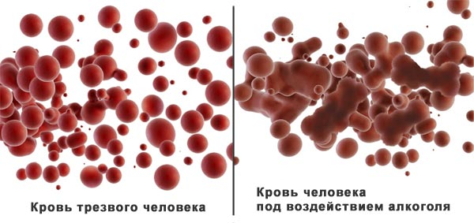

Проходя через ЖКТ, этанол всасывается в кровь. Под его воздействием эритроциты начинают разрушаться и слипаться между собой.
Кровь, похожая на плохо размешанную кашу, разносится по всему организму, из-за чего органы испытывают кислородное голодание и не могут полноценно выполнять свои функции. Возникает головокружение, нарушаются мышление и координация движений.
Когда этиловый спирт связывается с мозговыми биологически активными жидкостями (нейромедиаторами), через которые передаются электрические и химические импульсы, происходят изменения в личности. Меняются настроение и поведение.
Печень выделяет ферменты, необходимые для расщепления этанола и вывода его из организма. Если в организм поступает слишком много алкоголя, печень перестаёт справляться с нагрузкой и включает защитный механизм - тошноту и рвоту.